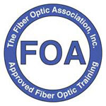

FOA Capacitación en Ecuador!!!
We are here to help you with all telecom and fiber optics questions.
Our team is providing technical solutions to customers globally in the following areas:
FOA Approved School #365
Si, hablamos español!
Meet your FOA instructors:
Andrei Vankov, ingeniero principal, recibió su BS de Thomas Edison State College y su MSEE de Pennsylvania
State University. Comenzó su carrera cuando era estudiante de pregrado en Princeton, Nueva Jersey, como
investigador del personal sobre «Crecimiento de películas orgánicas emisoras de luz mediante una técnica
novedosa: epitaxia en fase de vapor orgánico». Este fue su primer proyecto SBIR exitoso patrocinado por el
Departamento de Defensa y la Fundación Nacional de Ciencias. La aplicación se comercializó en pantallas planas
basadas en LED orgánicos.
Continuó su carrera laboral en Sumitomo Electric Lightwave Corp como ingeniero de fabricación de fibra óptica,
donde trabajó en componentes activos y pasivos utilizando métodos Kaizen en Yokohama, Japón. En Sumitomo fue
responsable de la fabricación de cables y componentes de fibra óptica para las principales empresas de
telecomunicaciones mediante análisis estadístico DOE.
Como ingeniero senior de diseño óptico en Franklin, MA (fundado como Advanced Interconnect), Andrei Vankov
desarrolló varios componentes ópticos pasivos e integración de paquetes para cumplir con los estándares de la
industria de Telcordia. Diseñó interconexiones ópticas, incluidos backplanes ópticos (MTP, HBMT, PHD, OGI) y un
conector de transmisión compatible con SMPTE de fibra óptica para aplicaciones HD.
En 2011, Andrei desarrolló cables especiales de fibra óptica para el programa US Military JFS. La cubierta
exterior del cable, basada en polímeros de cristal líquido (LCP), se usó más tarde en el cable de fuselaje para
aviones F-35. Antes de esto, las fibras que se usaban en las tarjetas de los aviones informáticos sufrían
importantes fallas por roturas debido a las duras condiciones ambientales.
A partir de 2013, Andrei trabajó en la división Radio Frequency Systems (RFS) de Nokia, donde lideró un equipo
de proyecto de lanzamiento de LTE RAN. Fue responsable de la ingeniería, el diseño y la estimación de costos de
construcciones de fibra óptica para proyectos de torres celulares y de microondas, definiendo criterios de
diseño y completando la planificación inicial y las estimaciones de costos de proyectos de fibra óptica en EE.
UU. y México. Los clientes incluyeron Verizon Wireless, Sprint, AT & T, ALU, TelMex, Fiber to the Home/Hub,
Ethernet to the Cell Site/Tower Distributed Antenna Systems y Fiber to the Cell Site/Tower.
En 2021, Andrei se unió al equipo de SENKO como ingeniero de aplicaciones sénior.
Participa en el Comité de ingeniería de estándares técnicos TIA TR-42 que desarrolla y mantiene estándares de
telecomunicaciones para la infraestructura de cableado de telecomunicaciones y es miembro de la Sociedad Óptica
de América. Posee varias patentes estadounidenses en el campo de la fibra óptica.
Jose Mosquera, Ingeniero en Ciencias graduado de la Universidad Central Estatal de Connecticut
y actualmente está cursando una Maestría en Administración de Empresas (MBA) en la
Universidad de Quinnipiac de CT. Comenzó su carrera como técnico de laboratorio de ingeniería
trabajando en pruebas destructivas a componentes y antenas de microondas y frequencias de
radio desarrolladas para entornos hostiles. A lo largo de su carrera, trabajó en plantas de
fabricación de cables con líderes globales en la industria (Nokia, Carslile, Nexans, Marmon
Group, Fiber Optical Corporacion) diseñando, administrando, e industrializando líneas de
productos que van desde cables de telecomunicaciones de datos hasta arneses sofisticados
diseñados para torres de telefonía móvil, líneas de transmisión de potencia, comunicaciones
aeroespaciales y cables de termopares.
En los últimos años manejó con éxito múltiples líneas de productos híbridos(potencia/fibra
óptica) que trajeron ingresos a la compañía en un rango de $ 60 a $ 70 millones de dólares por
año. Jose Mosquera lidero la transferencia tecnologías de vanguardia para las comunicaciones
dentro túneles líneas de trenes subterráneas a EE. UU desde Alemania que mejorarán las
comunicaciones móviles dentro de los túneles en todo el país. Su rol como especialista en
tecnología global para una empresa líder mundial, Nokia, le permitió estar al borde de los nuevos
desarrollos científicos en telecomunicación.
Experiencia internacional incluye; estandarización de tecnologías globales usadas en las
divisiones de Nokia en países como Alemania, China, Australia, Brasil y México.
Actualmente Jose se desempeña como Director de Ingeniería para Optical Cable Corporation en
Roanoke, VA uno de los líderes en manufactura de cable y componente de fibra óptica para el
mercado comercial y militar en América del Norte.